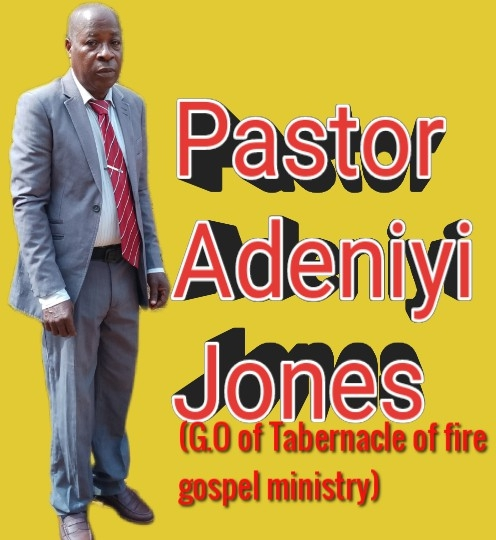

The Tabernacle Of Fire Gospel Ministry
“For our God is a consuming fire.” — Hebrews 12:29
Worship With UsAbout Us
The Tabernacle of Fire Gospel Ministry (TOFGEM) is a Bible-believing church committed to the power of prayer and the message of true repentance.
We believe that prayer is the key that opens the door to God’s presence, power and transformation. Through fervent and consistent prayer, lives are changed, families are restored and destinies are unlocked.
We also preach the message of repentance — calling people to turn away from sin and return fully to God with a pure heart. Our desire is to see men and women experience genuine salvation, walk in holiness and live a life that glorifies God.
At TOFGEM, we welcome everyone to come, pray, hear the Word, and encounter the consuming fire of God’s presence.
Our Leadership

Pastor Adeniyi Jones
General Overseer
Pastor Adeniyi Jones is the General Overseer of The Tabernacle of Fire Gospel Ministry. He is a man of prayer who is passionate about leading people into a deeper relationship with God through genuine repentance and a life of holiness.
Under his leadership, the church continues to grow as a place of powerful prayer, sound teaching and spiritual transformation. He is committed to raising a generation that will stand for truth, walk in the fear of God, and impact their generation for Christ.
Join Us
Every Sunday
Sunday School
9:00 – 10:30 AM
Sunday Service
10:30 AM – 12:00 Noon
Last Saturday of the Month
Divine Solution Hour
10:30 AM
2nd Thursday of the Month
Liberty Prayer Hour
4:30 PM
📍 No. 49 Omosula Street, Ehin-Ogbe, Owo, Ondo State, Nigeria
Prayer & Enquiries
Need prayer or have a question? Reach out to us anytime.
💬 Message us on WhatsApp0706 618 9773